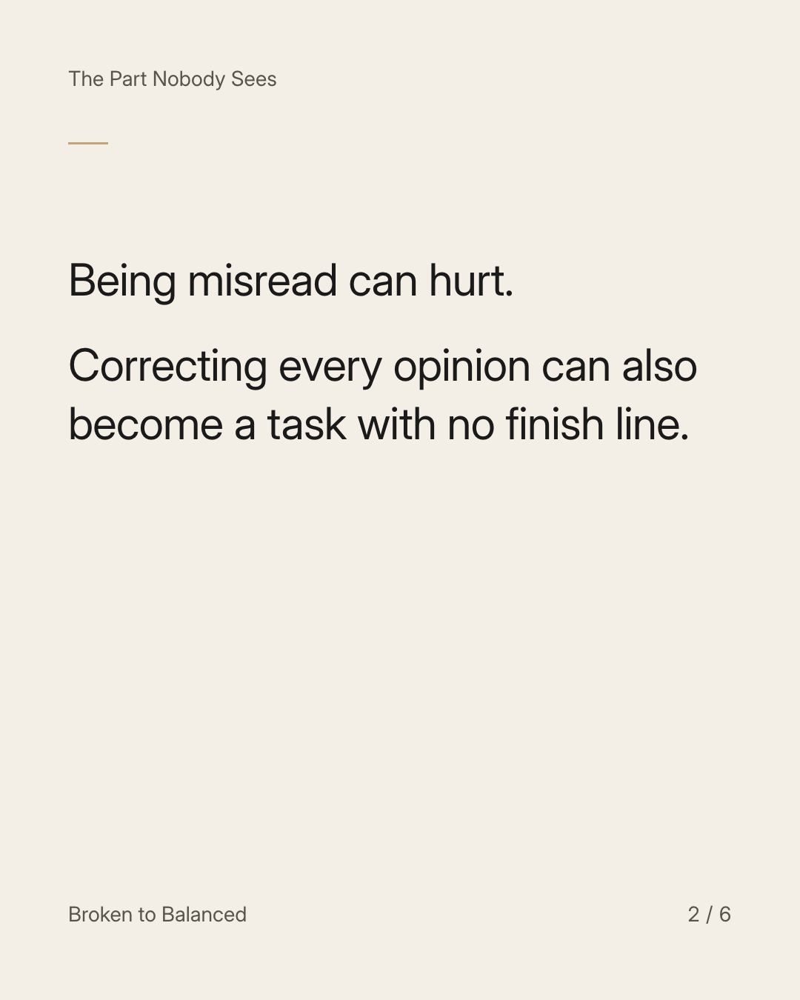
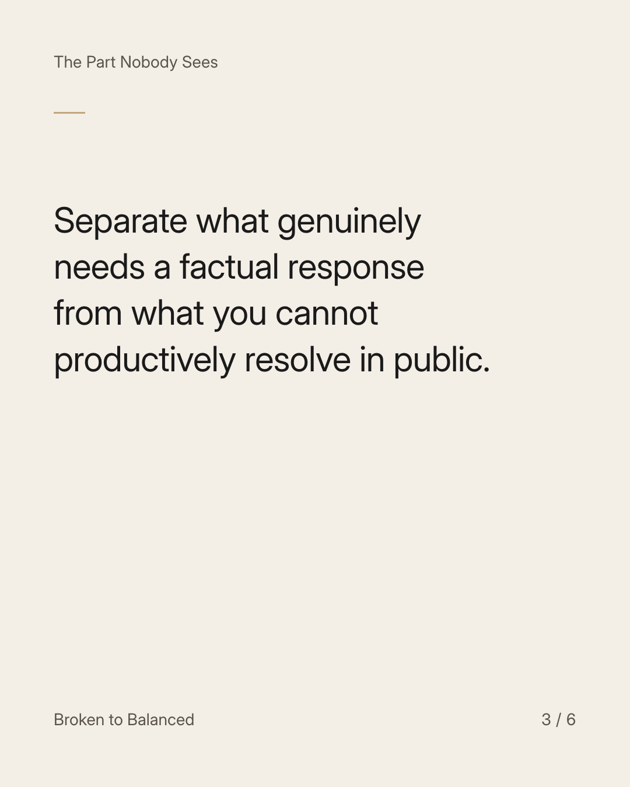
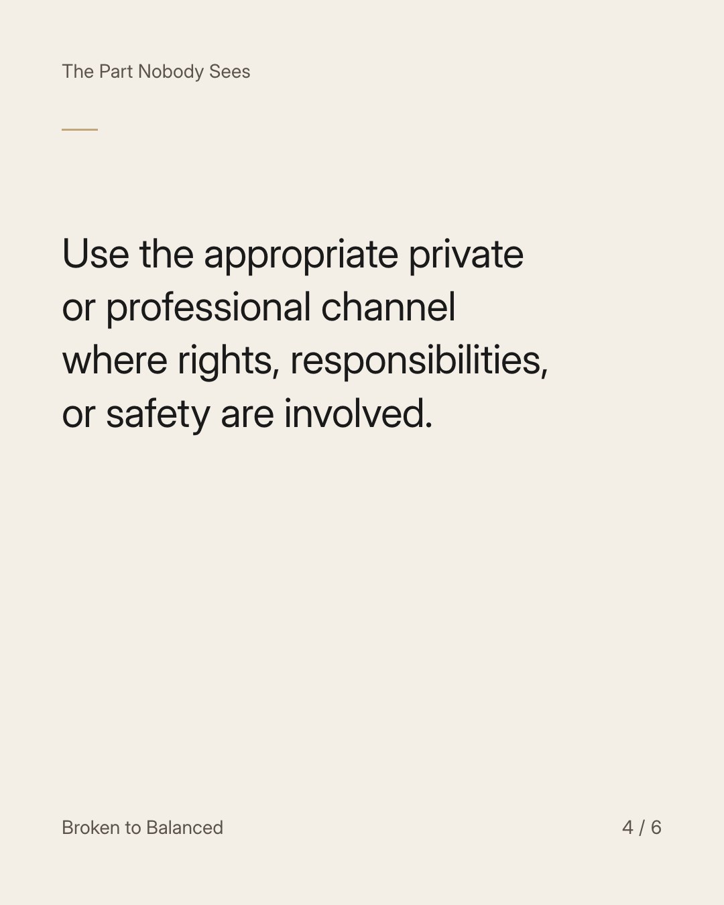
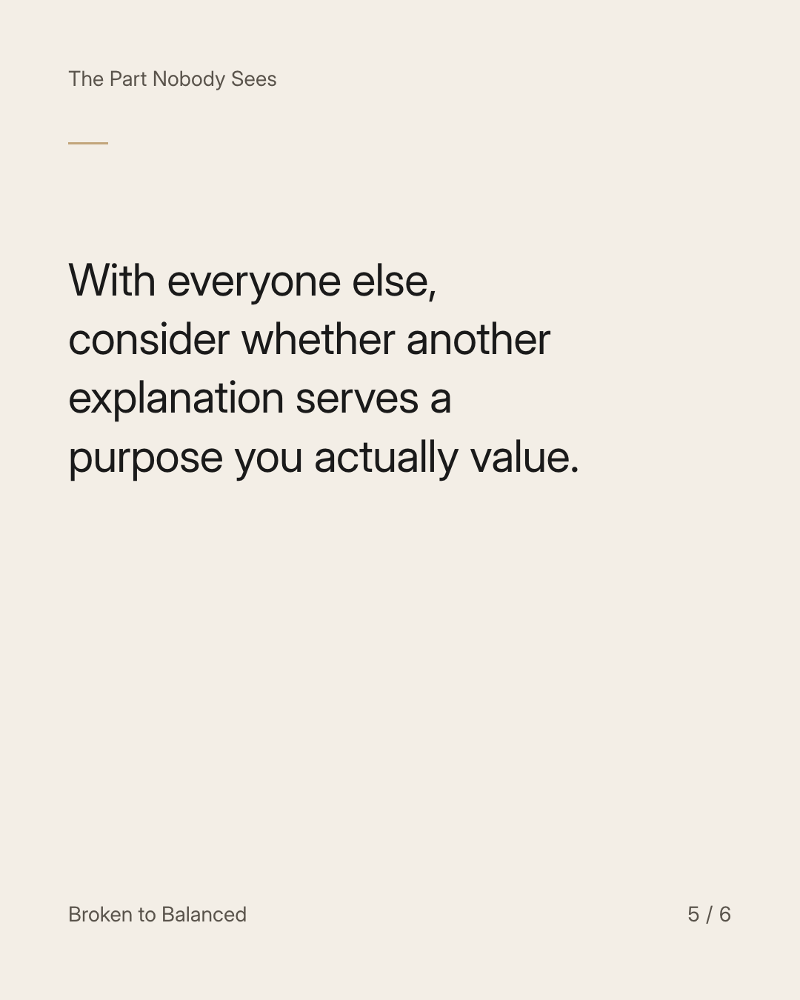
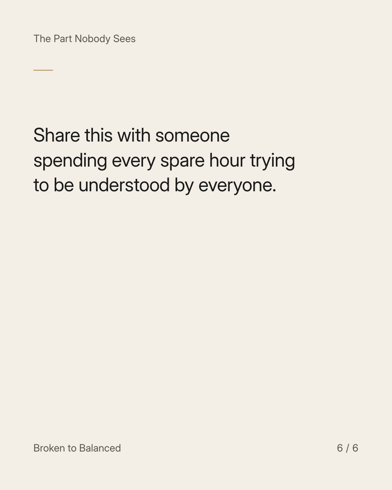

Exact text and accessibility text
You can stop explaining without pretending nobody misunderstood you.
Slide 1 of 6. You can stop explaining without pretending nobody misunderstood you.


Exact text and accessibility text
Being misread can hurt. Correcting every opinion can also become a task with no finish line.
Slide 2 of 6. Being misread can hurt. Correcting every opinion can also become a task with no finish line.


Exact text and accessibility text
Separate what genuinely needs a factual response from what you cannot productively resolve in public.
Slide 3 of 6. Separate what genuinely needs a factual response from what you cannot productively resolve in public.


Exact text and accessibility text
Use the appropriate private or professional channel where rights, responsibilities, or safety are involved.
Slide 4 of 6. Use the appropriate private or professional channel where rights, responsibilities, or safety are involved.


Exact text and accessibility text
With everyone else, consider whether another explanation serves a purpose you actually value.
Slide 5 of 6. With everyone else, consider whether another explanation serves a purpose you actually value.


Exact text and accessibility text
Share this with someone spending every spare hour trying to be understood by everyone.
Slide 6 of 6. Share this with someone spending every spare hour trying to be understood by everyone.
Exact caption
Plain-text fallback: select and copy the caption.